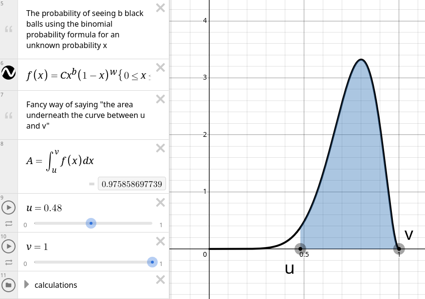
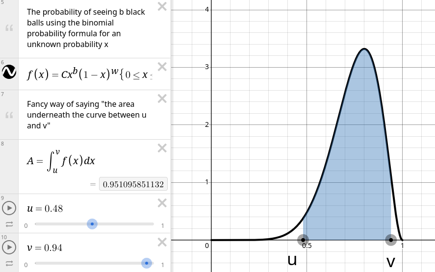
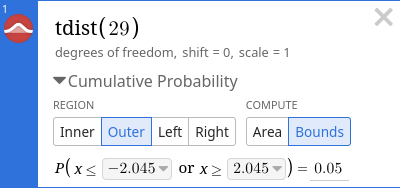

6 Activity 6
A bag contains \(10\) marbles, some black and some white. You experiment to find the number of black and white marbles by sampling from the bag with replacement. The following function outputs a 0 if the marble was white and 1 if the marble was black. We do this 10 times.
Exercise 6.1
- Let \(p = \frac{\# \mathrm{black}}{10}\) be the probability of drawing a black marble. Based on the random experiment above, what is the point estimate for \(p\)?
- Make a rough bar plot where you rank (from 1 to 5) the likelihood of each of \(0\) through \(10\) as being the true number of black marbles in the bag.
6.1 Using the likelihood function to estimate \(p\)
A likelihood function is just a probability calculation as a function of some parameter. E.g. the probability of drawing \(5\) black marbles out of \(10\) is higher (more likely) when \(p = 0.5\) than it is when \(p = 0.05\).
Open this Desmos graph in a new tab (right-click → open in new tab).
Exercise 6.2 Complete the following steps than write down your numbers for \(u\) and \(v\):
- Change \(b\) and \(w\) to the number of black and white marbles respectively you found previously.
- Starting with \(u = 0\) and \(v = 1\), slowly drag \(u\) to the right until \(A\), which represents the area under the curve, is as close to 0.975 (97.5%) as you can make it. 
- Now move \(v\) to the left until \(A\) is as close to 0.95 (95%) as you can make it. 
- Report \(u\) and \(v\).
Context: moving \(u\) until \(A\) was \(\approx 97.5\%\) means there was a \(2.5\%\) chance of being less than \(u\) and likewise a \(2.5\%\) change of being bigger than \(v\). So overall there is a \(5\%\) chance of not being between \(u\) and \(v\) and a \(95\%\) chance of being between \(u\) and \(v\).
Exercise 6.3 The qbeta function performs what we just did in Desmos. Specifically, we run
to find \(u\) and \(v\) respectively. (The \(+1\) is due to some \(-1\)s that appear in the beta distribution behind the scenes.)
- Change the \(8\) and \(2\) to your number of 1s (black marbles) and 0s (white marbles) respectively. Then report the exact values of \(u\) and \(v\).
- Rewrite this with your values of \(u\) and \(v\): “a 95% CI for p is \((u, v)\).”
- You will notice that this confidence interval is quite wide because with only \(10\) samples it’s hard to pinpoint the true proportion of black marbles. Let’s change \(n\) to \(1000\) and try again:
Take these numbers back to the qbeta box to compute a new \(u\) and \(v\) and report a new confidence interval (as in 2.).
Technically these qbeta-intervals are “credible intervals” not “confidence intervals” but they function the same.
6.2 Using the Normal approximation
Recall our formula for the normal approximation confidence interval is \[
\hat p \pm 1.96 \sqrt{\frac{\hat p \hat q}{n}}
\] or more generally, use qnorm(1 - alpha / 2) instead of 1.96.
Exercise 6.4
- With the numbers for \(n = 1000\) what are \(\hat p\) and \(\hat q\)? Recall: if we saw \(x = 300\) black marbles then we saw \(700\) white marbles and in this example \(\hat p = 300/1000 = 0.3\) and \(\hat q = 700/1000 = 0.7\).
- Compute \(E = 1.96 \sqrt{\hat p \hat q / n}\):
- Compute \(\hat p - E\) and \(\hat p + E\):
- Are these numbers similar to your \(u\) and \(v\) from the previous exercise?
Exercise 6.5 Now run through the steps of the previous exercise but with the numbers for \(n = 10\) from Exercise 6.1. (Remember to change the /1000 to /10 in part 2.) Are these numbers similar to the first set of \(u\) and \(v\) we found?
6.3 Miscellanea
Using the formula \(n = \frac{1.96^2 \cdot 0.25}{E^2}\) (which we use if \(\hat p\) is unknown) we can estimate how many samples we need to achieve a desired error.
Exercise 6.6
- Suppose we want to be really really sure of \(p\) and we want the error to be no more than \(0.001\) (e.g. our confidence interval would be \(0.399\) to \(0.401\)). Compute this \(n\) (either by typing in the formula or using your own calculator)
- Now let’s use this for a
qbetaconfidence interval:
- This has all assumed we wanted to be 95% confident. Suppose instead we want to be 99% confident.
- What is \(\alpha = 1 - 0.99\)?
- What is \(\alpha / 2\)?
- Compute
qnorm(alpha / 2)and remove the minus sign that comes up
- Replace the \(1.96\) with this value when we were computing the normal approximation confidence interval:
- Compared to the confidence interval from Exercise 6.4, is this 99% confidence interval wider or narrower* than the 95% confidence interval?
6.4 t-distribution
For the following scenarios, compute
- \(\alpha/2\)
- \(\mathtt{qt(\alpha / 2, df = n - 1)}\) (as an analogue of the 1.96 threshold)
- \(E = \text{quantile-for-t} \cdot \frac{s}{\sqrt n}\).
Reminder: quantiles are percentiles but for a decimal rather than a percent and the “t distribution” is like the normal distribution but with slightly larger percentiles due to the extra uncertainty in using \(s\) rather than \(\sigma\).
Report something like \(95\%\text{-CI for } \mu = \bar x \pm E = 41 \pm 3\)
Example 6.1 Suppose scores for an exam have a mean of \(75\) and sample standard deviation of \(6\) with \(n = 30\). For a 95% confidence interval for \(\mu\) (\(\alpha = 0.05\)):
- \(0.05 / 2 = 0.025\)
- \(\mathtt{qt(0.025, df=29)} = -2.04523\)
- \(E = 2.04523 \cdot 6 / \sqrt{30} = 2.240437\)
A 95% CI for \(\mu\) is \(75 \pm 2.24\) or \((72.76, 77.24)\)
Exercise 6.7
- \(\bar x = 70, s = 10, n = 49\) and we want a \(99\%\) confidence interval (\(\alpha = 0.01\))
- \(\bar x = 125, s = 12, n = 217\) and we want a \(90\%\) confidence interval (\(\alpha = 0.1\))
- \(\bar x = 60, s = 8, n = 5103\) and we want a \(96\%\) confidence interval (\(\alpha = 0.04\))
You can also use Desmos to compute these threshold values. 
Feel free to use this method for one of the problems for practice.